12. Composites
Design and make 3D mold and produce fiber composites
SKATEBOARD(a.k.a WaVY)
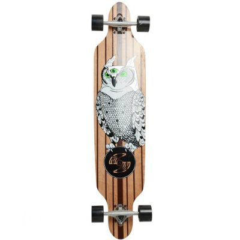 |
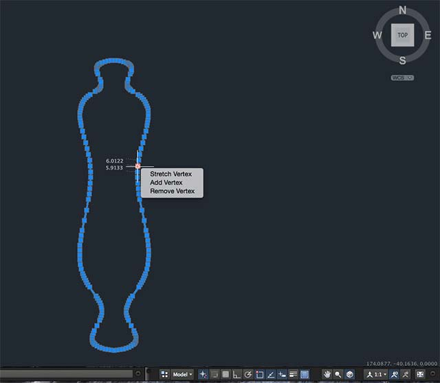 |
SKATEBOARD DESIGN |
AUTOCAD FIXING ThE OUTERLiNES |
- First, the autocad design to do some laser cut(do 2D design)
- Engrave some lines or photos ford custom logo
- Use 5~7 layers of 1.6T hydrostone
- Spread composites of polyester resin (on rooftop)
- Cover with vacumm bags( or food wrap film?) OR Compression mold for making curvy board
Preparation
1,000 x 300 mm foam (3D molding), 1.6T layer of hydrostone, polyester resin, protection mask, latex gloves, vacumm vinyl, fiber glass.
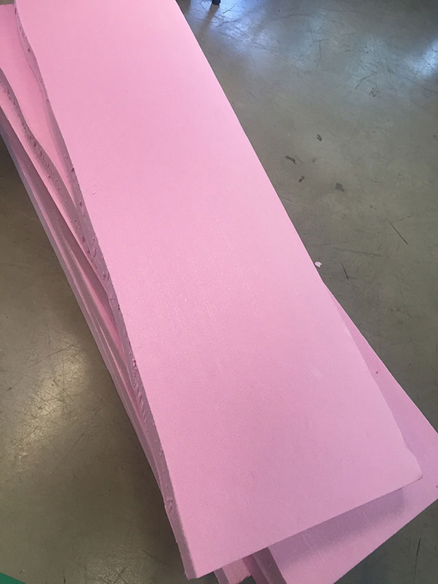 |
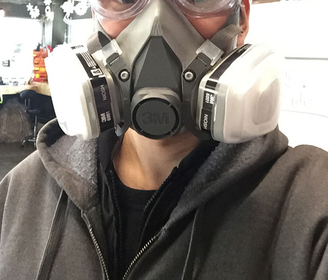 |
PINK FOAM FOR 3D MOLD |
SAFE FILTERING MASK |
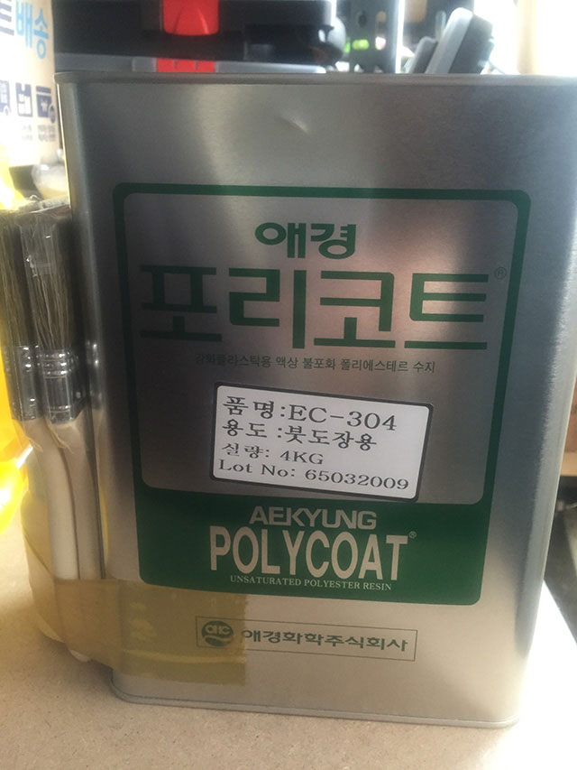 |
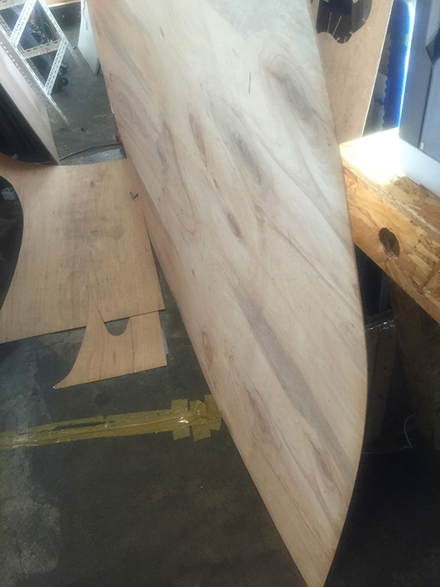 |
POLYCOAT IN CAN |
HYDROSTONE BENDING WOOD |
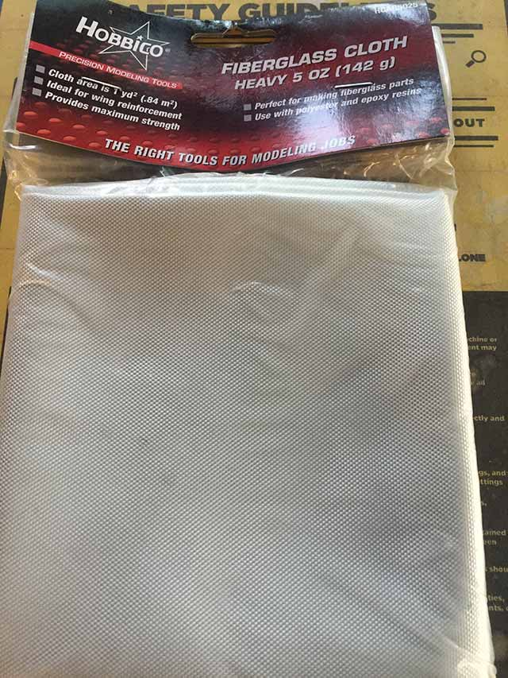 |
|
FIBER GLASS |
Compression mold
I tried Fab Modules to create curvy surface on skateboard using the gradient png file. By creating the canvas of 450 x 240 ( ½ width x height) and duplicated the file and mirrored the image. This way for the Part A and Part B will be giving force to the wood so it bends with the curvy surface that i want.
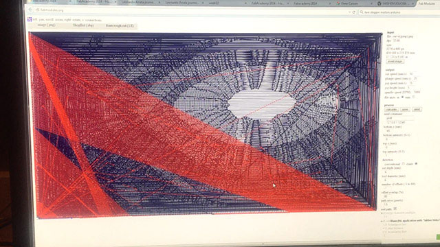 |
||
ORIGINAL GRADIENT FILE (450MM * 240 MM) |
MIRRORED IMAGE (900MM * 240MM) |
WORKING ON FABMODULE |
FAB MODULE SETTING ADJUSTMENT
- cut speed (mm/s) : 100
- plunge speed (mm/s) : 25
- spindle speed (RPM) : 14,000
- file units : mm
- bottom z (mm) : -40
- cut depth : 6mm
- tool diameter (mm)
- End mill for foam cut : 6mm 2 fl, 6mm Shank
I’ve cut the foam and name the file Part A and Part B
Making 3D mold
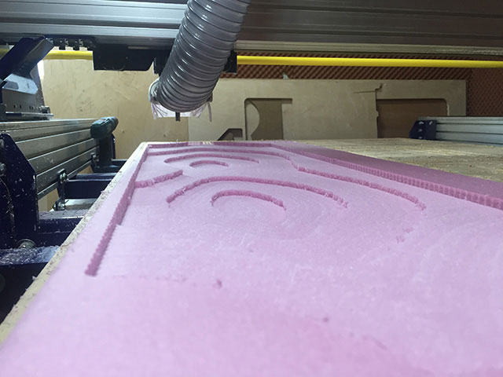 |
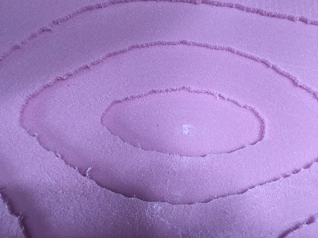 |
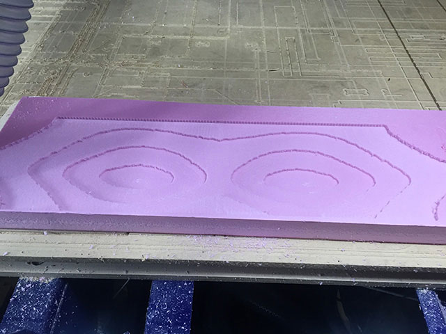 |
FEMALE PART ROUGHING |
CLOSE UP OF FEMALE PART(ROUGH) |
FEMALE PART ROUGHING FINISHED |
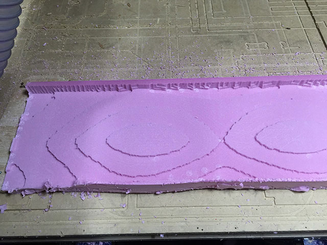 |
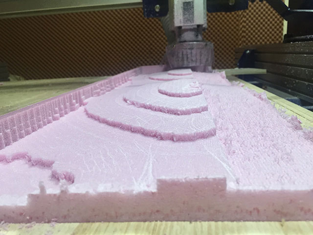 |
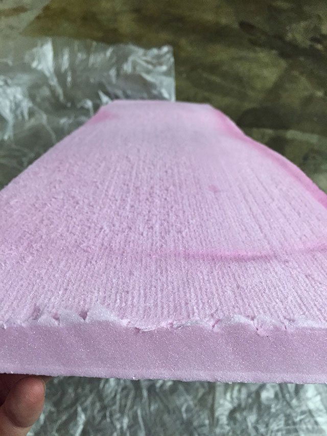 |
MALE PART ROUGHING |
FISNISHING CUT OF MOLD |
CLOSER LOOK AT BENT MOLD |
3DMOLD FINISHED(SUPER MAGNIFIED)
Composites in action
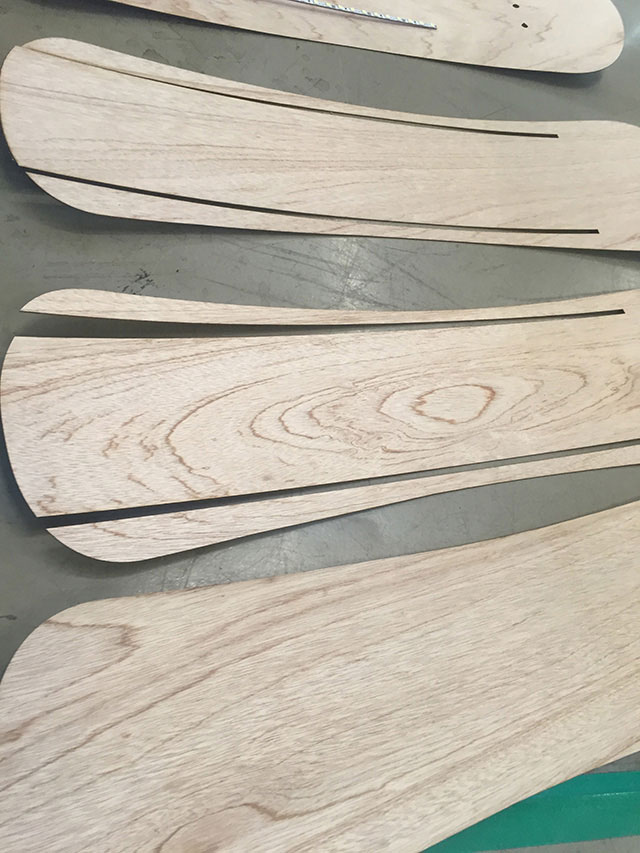 |
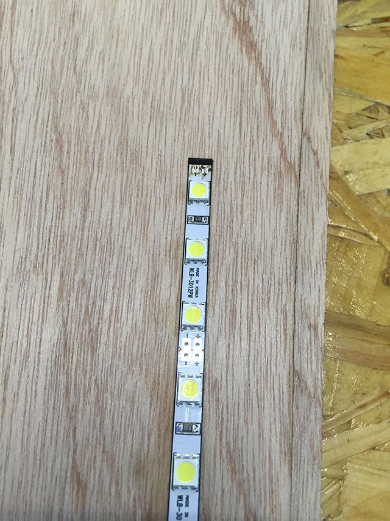 |
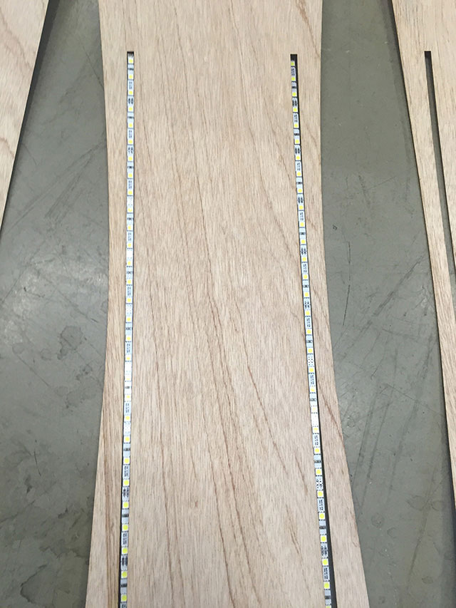 |
LASER CUT-BOARD |
0.2 TOLERANCE CALCULATED |
FIXING THE LAYER |
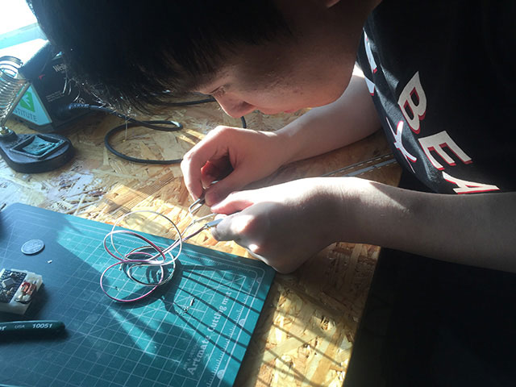 |
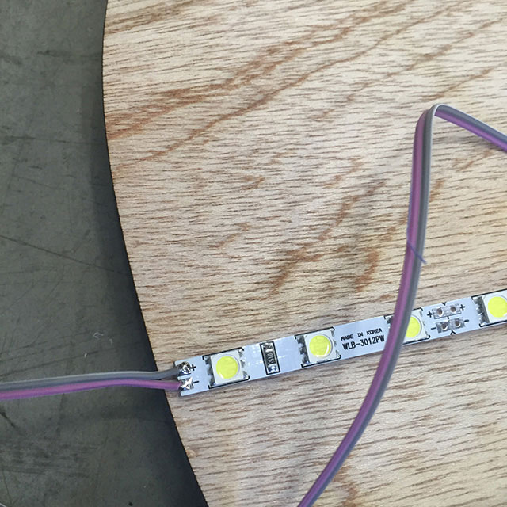 |
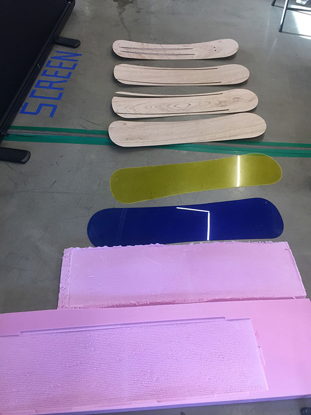 |
SOLDERING THE WIRE |
CLOSER LOOK AT LED WIRES |
LYING ALL THE LAYERS FOR SIMULATION |
Safety first, safety second, safety last is what i’ve learned hard with instructor. Leave all possible windows open for the toxic smell to go out and make sure the room space is ventilated thoroughly throughout the process. Prepare water tissues, mask and eye protective gear and finally demonstrate the layer in order i’m putting on resin.
And last of all, as my instructor guided I wanted to insert a LED inside a wooden layer. As the hydrostone(bendable wood) is 1.6T and the LED is 3mm(with gum removed) I made two layers of wood that is for inserting the LED and quickly soldered wires for future connecting with batteries.
I’ve checked with the laser tolerance and made a socket that LED’s could fit in. It had to be in exact size otherwise LED could be making a movement and maybe go wrong with any other incidents.
Laser cut for inserting the LED tolerance 0.4mm for both left and right sides. Therefore with AutoCAD I’ve made a rectangle with the space the wire can be pulled out from the back of the skating board.
Laser cut Speed : 50mm/s & power of 30 % for cutting.
/ Used model : Laserworks’ X-cut model from FabLab Seoul
(Photo : putting 2 LED strips for the lightning skate-board)
You can see I laid down all the layer of materials for doing composites because as soon as the work is started there is no turning back. To prevent any more mistakes I have to rethink again which layer would go at the bottom and where the LED should be inserted. Normally doing composites need more than one people so It’s wise to talk with the partner more carefully
Procedures
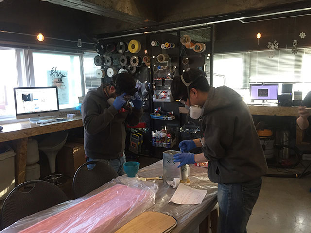 |
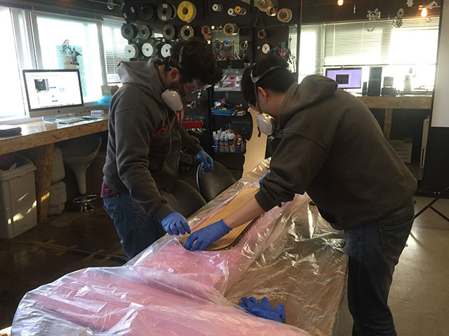 |
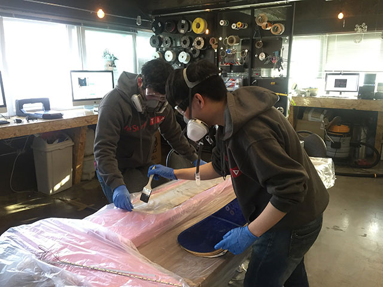 |
WINDOW OPEN, PROTECTION ON LET'S GO |
DEMONSTRATING LAYERS |
BRUSING STARTS!!! |
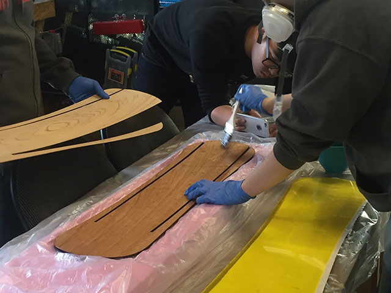 |
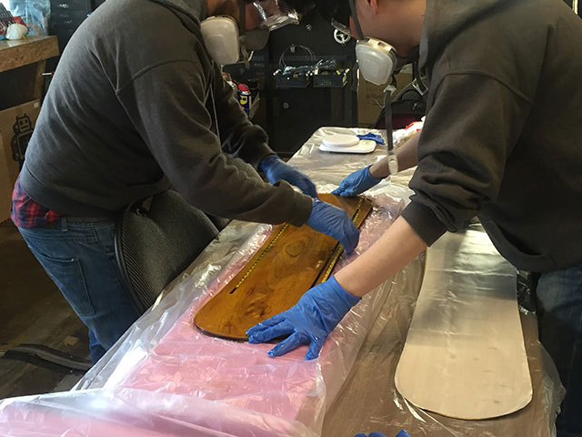 |
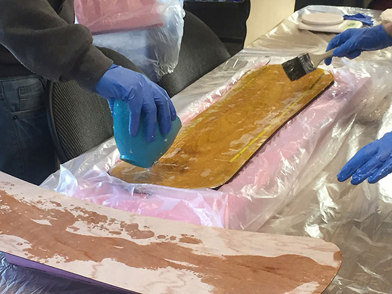 |
BRUSHING WITH DETAIL |
PUTTING THE LAYER ON TOP |
EMERGENY POUR OF RESIN |
bottom wood ->fiber glass -> blue acrylic -> wood with led layout x 2 -> LED(one facing up, one facing down) -> acrylic yellow -> fiber glass - > top wood -> upper mold -> weight
This was my procedure of doing composites and for safety wore heavy masks and spare clothes to prevent it from ruining. ** When doing the FIBER glass be sure to stick one side first with a resin to hold the layer more steay.
# UPDATE
I helped with the composites assignment with Dong-hyun Kim which I learned that there are some certain fiber glass that are not cut into real size of dxf. What I learned from helping Dong-hyun's assignment ist that when laser-cutting the fiber glass think of the stretchness of fiber glass that we have and when it's too big cut the parts that are not needed. However, when cutting fiber glass into many pieces it means a lot of additional work must to thiought through because the resin catalyze fast. What I tried for both assignment was only 5~10minutes.
I was a short of hands as my resin hardens in 5 mins I got a big help from fab instructor with holding the layers and guiding the part that needs more resin. It was very helpful for me as I’m busy trying to paint the resin the helper could tell me the part that needs more resin. Of course the part should be aligned with a match but moreover the most important thing was having a great partnership and going over the procedure inside my head.
Check the catalyst and check the timing of how it is dried out. If you don’t check the time and make slow movement you’ll end up making composites that are not stick together properly. It happen with my skateboard when i was finally doing the final layer of wood the chemical reaction of hardening was out of control.
So this time, we were making quick move so pouring another mixture so to put the resin in quick time for the final layer.
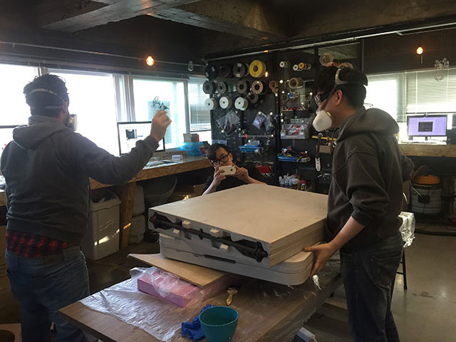 |
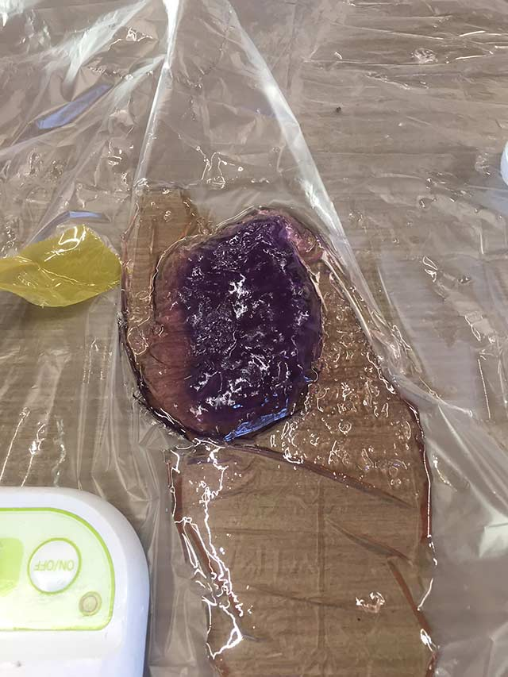 |
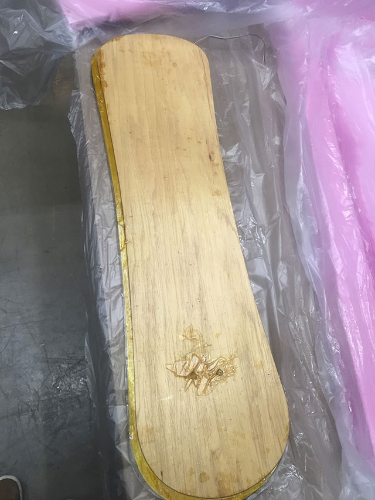 |
PRESSING WITH HEAVY LOADS |
RESIN LEFT-OVER |
FINISHED OUTPUT |
When finally putting on weight for the composites to hold its position very well it has to be very careful not to be moved with distractions. It’s a shame that the final layer is moved and is not in exact position however, It was amazing to see the lights come on with the external power source. It isn’t exactly the shape that i’ve imagined but It was a good week to know the composites and really come into action with making real thing. I was amazed with the weight it can hold stand.
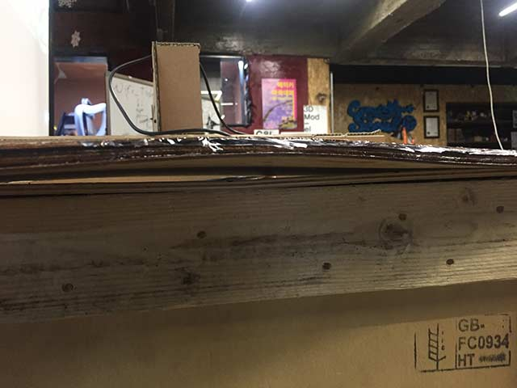 |
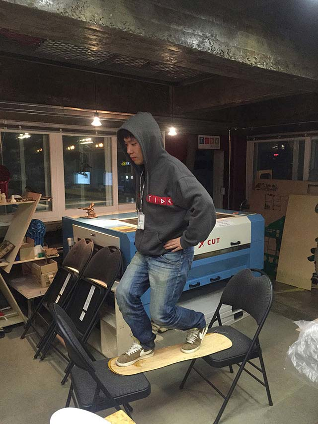 |
CHECKING HOW BOARD BENT |
HARDNESS TESTING |
What i learned ...
I've heard a lot about having great caution when dealing with composites. I had a personal experience of smelling just a few seconds of composites with mask that doesn't have heavy filters I was getting a bit of a headache. The moment I realized that this material must be dealt with super high caution
One thing i want to say more is that even though we had a careful thought and preparation and carefulness with treating material we had a little accident of getting some of resin on our hand. It was tiny bit of resin but once it is touched we used alcohol to wash our hands.
Reason why is shown below with composites in action it makes a smoke and imagine it’s on our skin. Be careful again as we can not go easy on chemical reaction.